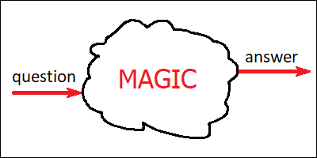

I’ve learned this from the book “Thinking, Fast and Slow” by Daniel Kahneman and Amos Tversky, although similar ideas have probably been expressed long before. Intuition is unconscious. It’s a way of getting an answer by simply asking the question. And quite often even the question isn’t needed: the answer will appear out of nowhere “for free”, by itself. Intuition isn’t free though. It’s always a result of hard work. Intuition is also never perfect. It improves with experience, and it requires a lot of experience in order to become useful. During this process, some common patterns are deduced and stored somewhere inside hidden areas of our brain which we don’t have conscious access to.
Examples of a properly working intuition would be a soldier falling to the ground before hearing the sound of a bullet, a bike rider performing all the right movements perfectly without understanding how bikes really work, a chess player “seeing” the right move instantly, or a mathematician recognizing a familiar formula within a heap of mathematical symbols.
Examples of intuitions which don’t work as expected would be a former soldier falling down before hearing the sound of a firework, a ski rider trying to ride a snowboard as if it were a pair of skis, a person lending money to a fraudster because this fraudster looks “trustworthy”, or a casino player seeing a “pattern” in winning roulette bets.
Intuition feels like magic, but it really isn’t. The soldier has learned to recognize the sounds of different types of bullets after having heard a lot of them. This whole recognition process goes unconsciously, so he doesn’t even realize what’s happening until he’s lying down in the dirt and the bullet has passed over him. And when he’s back home, this learned intuitive behavior will remain, even if it’s not useful anymore. Similarly, it takes a lot of effort to learn to ride a bike (or ski), and it also takes a lot of effort to learn to play chess. Whoever didn’t do the work, wouldn’t have the intuition. The more you play chess, the better will be your “magical” skills of guessing the right move. And the more you study mathematics, the more hidden connections you’ll start to “see” which lay people have never been aware of.
We still don’t fully understand how intuition works, and I would actually guess that a range of very different underlying brain mechanisms could be responsible for the behaviors mentioned above. There are some common traits though. Intuitive processing is unconscious. It’s automatic, in the sense that we are not actively aware of the exact “rules” employed by it. We learn riding a bike by trying to make different random movements and sticking with the successful ones. We know that this process results in some kind of an “algorithm” for riding the bike, encoded somewhere inside our head. However, most of us wouldn’t be able to write this algorithm down. And in this sense, we don’t really “understand” what we are doing.
The danger of intuition is that it’s not always correct. And since we don’t have any real understanding of what it’s actually doing, we can’t really tell for sure whether our intuitive predictions are right or wrong. This leads to mistakes like falsely believing that some person is “trustworthy” when they are actually not. Our ability to guess people’s intentions does improve with experience, but not every one of us has had the right amount of such experience for every possible situation, and that’s what fraudsters take advantage of. And of course, casino slot machines are not predictable, but that’s not what our intuition would expect. Its only purpose is to recognize “patterns” which we’ve seen before, even if there’s nothing out there to be actually looking for.
That’s why intuition alone is not enough. It’s important, and it is responsible for doing most of the work, but in order to be truly successful we also need something else.
